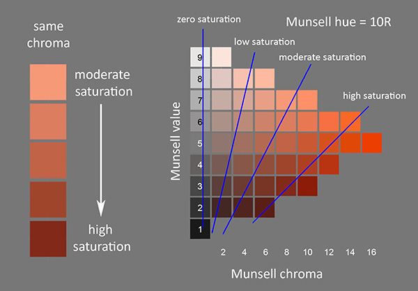

Drag to pan the camera! Play with the sliders to explore! Scroll down for fun facts.
Albert H. Munsell (1858–1918) was an artist and scientist seeking to quantize color space in a perceptually uniform way. He began working on his system in 1898 and published it in 1905, although research and revisions continued after his death.
For this tool I used the 1943 renotations published by the Optical Society of America, which built on his work with extensive experimental data. The dataset is available here (real.dat) via the Rochester Institute of Technology.
Munsell's work laid the foundation for much of color science as we know it today. It is considered the first known attempt to create a perceptually uniform color space, and the first to deduce that the space of human color perception cannot fit a regular geometric object (like a pyramid, cone, sphere, or cube).
Because of Munsell's connection to the art community, it is still often used by artists. Fun fact: the Munsell system is used in geology to classify the color of soil.
The short answer: Chroma means what you think saturation means.
The long answer: Chroma is measured relative to gray of the same value. Saturation is defined relative to white: adding black does not lower saturation, but adding white or gray does.
Why this definition? Consider a monochromatic light source in an otherwise dark room. If you turn the light down a bit, the vibrancy of the color decreases, but it is still a pure-colored light source, not muddied by other wavelengths. You could say its saturation has not changed. Now turn on a white light. The light in the room is no longer a “pure” color, and this loss of vibrancy is different from simply dimming the original light.
In the Munsell color space, lines of equal chroma are vertical, and lines of equal saturation are diagonal.

Munsell didn't specify any particular spacing along the vertical axis, nor did his dataset include white, black, or grayscale colors. I added grayscales by averaging luminance values across each horizontal “plate,” then tacked white and black onto the top and bottom. Thus the y-axis scale is completely arbitrary.
Note the visualization labelled "point cloud" is the original dataset, and both the dense point cloud and volume views have interpolated points added to it. To obtain colors in between the original data points, I linearly interpolated in La*b* color space. I used the library colour for python for all colorspace conversions.
You may notice that towards the outer edges (higher chromas) it looks like the colors aren't changing. Due to the limitations of RGB screens, many of the most chromatic colors can't be accurately displayed on a screen. You can see just how bad the clamping is by clicking "Clip to RGB limits" in the point cloud visualization. (A game I like to play with myself is to spot colors that are outside of the RGB gamut! I've appreciated a lot of brightly-colored flowers because of it.)
This website doesn't have color picker functionality. If you want a perceptually uniform color picker, such as for digital art, I recommend OKLCH.
All errors are my own. If you notice a major error or have a question, shoot me an email (please put “Munsell” in the subject line).
A very deep thank you to Andrew Geng (pteromys), whose own Munsell color explorer inspired me to make this one: pteromys Munsell Color Palette.
Thank you to James Fong for being super cool and helpful and answering all my questions.
Here are some more sites you might find interesting.